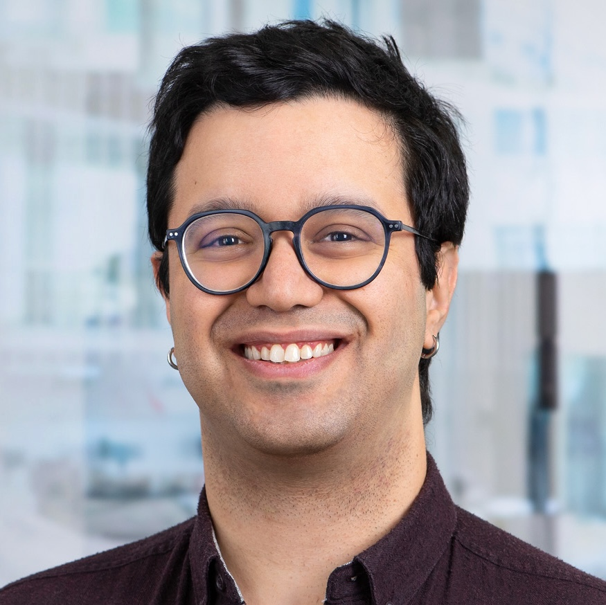

Sofiene Khiari
Pharmacist & Software Developer
I'm a driven pharmacist currently pursuing a PhD in the Computational Pharmacy Group at the University of Basel, where I blend my passion for Pharmaceutical Sciences and Computer Sciences to push the boundaries of what's possible in drug discovery.
As a staunch advocate of Open Source Software and Open Science, I'm committed to contributing to the community and fostering a spirit of collaboration. I believe that the future of pharmaceutical innovation lies at the intersection of cutting-edge computational methods and traditional pharmaceutical expertise — a space where I thrive.
Driven by a desire to make a tangible difference, I strive to develop groundbreaking pharmaceutical technologies that don't just advance the science, but do so with a keen focus on R&D costs and accessibility. My work is guided by a simple yet powerful principle: transformative solutions should be within reach for those who need them most.
Whether you're interested in collaboration, innovation, or exploring how computational approaches can revolutionize pharmaceutical research, I'd love to connect.